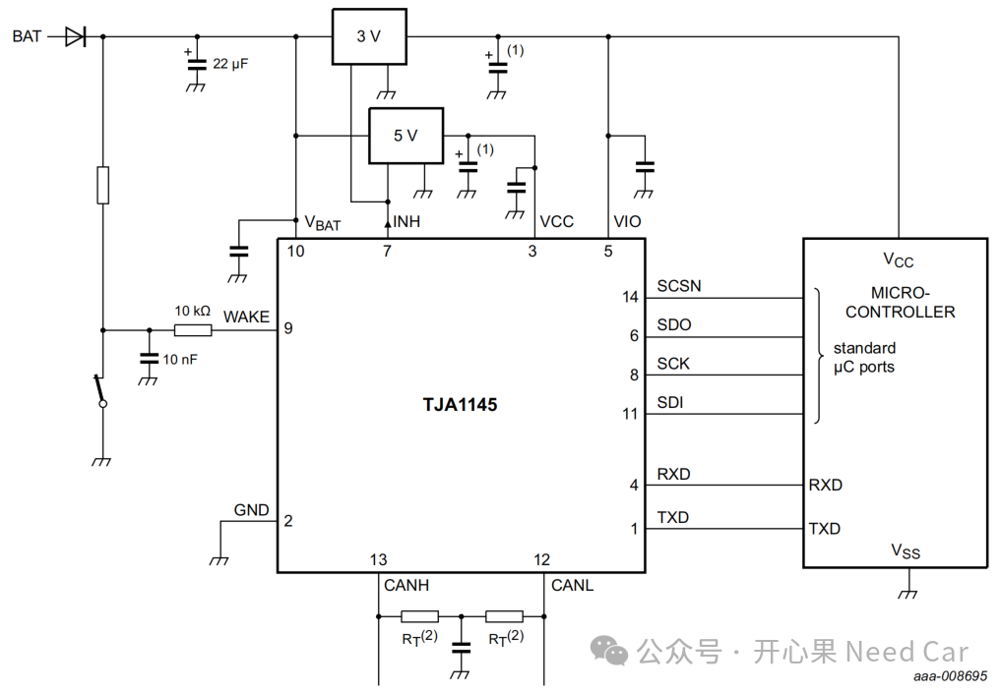
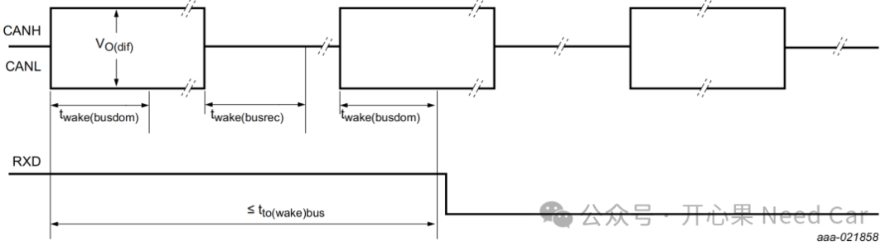
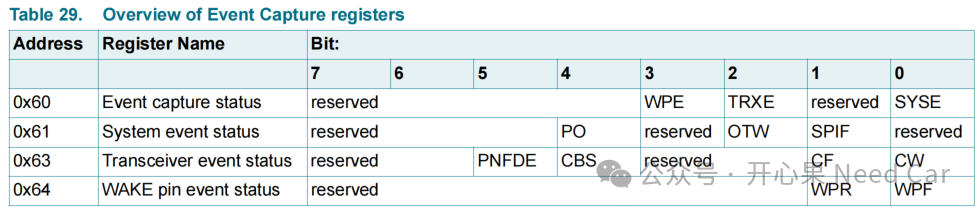
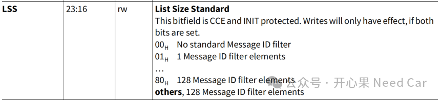
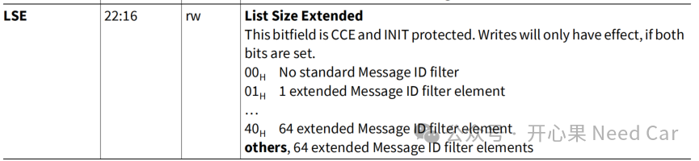
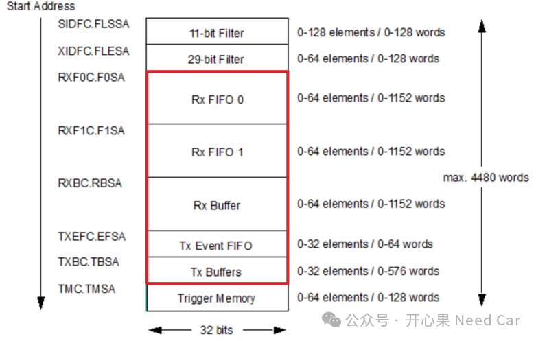

开心果 Need Car · 2025-06-30T06:36:00+08:00 · 微信原文



Q2：ECU在下电过程中，偶发遇到TJA1145异常设置唤醒源事件导致ECU无法休眠（外部CAN工具已经停发），该如何排查？
A2：遇到不能休眠的问题，一般来说，我们把问题分成两个大类：硬件和软件。对于硬件，我们可以排查最基本的线束连接（连接是否稳定、是否破线等）、测试环境的配置参数（波特率、采样点等）等；对于软件，首先会想到检查ECU的休眠逻辑，查看是哪个休眠条件没有满足，顺着这个思路去追查软件程序。所以，不能休眠的问题，首先锁定是哪个休眠条件未满足，进而收窄问题范围。
Q3：是否可以不使用CanTrcv来检测唤醒源，该如何设计？
A3：可以。
一、GPIO作为唤醒检查条件，KL15就是一个典型使用场景。
二、专用外置唤醒芯片，比如：某些电源管理芯片有Timer，可以通过设置唤醒时间（eg：2h），实现定时自动唤醒。eg：悬架高度自动唤醒巡检、超级电容剩余电量自动巡检等。
三、英飞凌的SCR（Standby Controller）这种专门用于复杂唤醒检测的硬件模组，XC800 Core，基于8051的8 bit带宽单片机，主打低功耗。
Q4 ：CAN配置是基于什么芯片配置的？配置一个CAN模块，最主要配置哪些内容？
A4：eg：基于TC3xx配置。包括通信参数（波特率、Tq占比、采样点、CanFD 延时补偿）、过滤器设置、中断处理等。具体细节可以参考《CAN通信基础：采样原理》。
如果配置了中断，使能中断后，MCAL配置了哪些中断？
TCE，Transmission completed interrupt（发送完成中断）
RFONE，eg：Rx FIFO 0 new message Interrutp（FIFO 0接收中断）
Bus_Off中断
每个中断产生的事件点是什么？
eg：TCE中断，接收端应答ACK槽以后触发TCE中断，完整接收一帧没有错误的报文到FIFO 0缓存区，TEC（Transmit Error Counter，发送错误计数器）>255触发的busoff中断。
Q5：一个CAN硬件单元（Node），最多可以配置多少个过滤器？一般采用什么样的配置原则？
A5：对于一个CAN Node，最多可以设置128个标准CAN ID的接收，示意如下：

对于拓展帧，一般可以配置64帧过滤，示意如下：

工程中，一般基于通信矩阵（*.dbc、*.arxml等），只接收通信矩阵中需要的CAN报文。
提示：对于不同的产品型号，过滤配置存在一定差异。
Q6： 什么是Basic CAN和Full CAN？ 一个CAN硬件单元最多可以配置多少个Basic CAN？配置CAN邮箱（harware objects）遵循什么样的原则？
A6：
BasicCAN：一个HWObject(Hardware Object)可以处理一段范围的CanId
FullCAN：一个HWObject(Hardware Object)只能处理单个CanId
可以参考前文《Autosar通信栈：FullCAN和BasicCAN基础》。一个CAN Node，发送/接收共256个objects，所以，最多可以配置256个Basic CAN。hardware objects遵循的配置原则，参考前文《MCMCAN：CAN hardware object配置规则》。CAN RAM各元素排布如下：

Q7：硬件芯片中的Rx buffer, Rx FIFO 0/1有啥区别， Tx Buffer, Tx FiFo, Tx Queue有什么区别？他们和Autosar架构下的Harware Objects是如何对应的？
A7：参考《Autosar通信栈：FullCAN和BasicCAN基础》。
Q8：一个CAN报文在DBC上配置的是8 bytes，CanOE发送9bytes长的这个报文，上层模块收得到这个报文吗？为什么？
A8：一般来说，如果软件CanIF配置了DLC检查，那么，出现错误以后，应该给出错误提示或者错误的返回状态。但是，实际的工程中，不同软件厂商或者项目中，处理的策略不完全一样。如果DLC错误了，软件层面，送给上层也没有问题。
往期精彩回顾